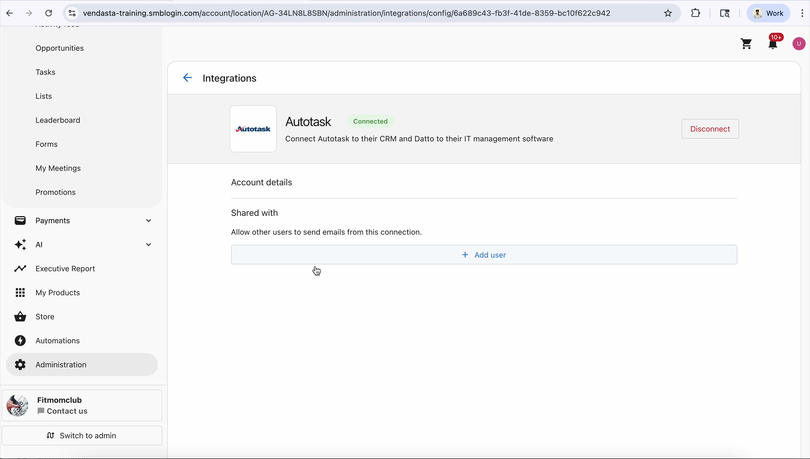

How I Turned a $2.2M Enterprise Deal Into a Live Platform Integration
Kaseya's 1,000+ MSPs needed to sell digital marketing without leaving their IT management tool. I designed and shipped the bidirectional integration between Autotask PSA and Vendasta that made it possible — and proved it works.
The Big Picture: Why This Integration Exists
Before you see what I built, here is why it matters — the business model, the players, and the gap I closed.
The White-Label Marketing Platform
Vendasta provides a white-label platform where channel partners (like MSPs, agencies, and media companies) resell digital marketing products — websites, SEO, reputation management, social media, advertising — to their small business clients. The Business App is the storefront where SMBs access these services.
The MSP's Operating System
Kaseya's Autotask PSA is where thousands of Managed Service Providers run their entire business: ticketing, time tracking, contracts, billing, and client management. MSP technicians live in this tool 8+ hours a day. It is their single pane of glass for everything.
Kaseya's "AMP" — Powered Services Pro
Kaseya launched AMP (Powered Services Pro) to help MSPs diversify beyond IT support by reselling digital marketing services powered by Vendasta. The $2.2M contract covered the full platform integration: authentication, CRM sync, billing reconciliation, and product configuration. Kaseya would white-label Vendasta's marketing products and sell them through their MSP channel to thousands of SMBs.
The Problem I Solved
MSP technicians live in Autotask PSA. Asking them to log into a separate platform to manage marketing products was a non-starter.
Before the Integration
- MSP techs had to log into Vendasta separately — different credentials, different UI, different workflow
- Client data entered in Autotask had to be manually re-entered in Vendasta (company name, address, contacts, phone)
- No unified billing — MSPs reconciled two invoicing systems every month
- Contact updates made in one system never reached the other
- Activation stalled: MSPs signed up for AMP but never adopted because the friction was too high
After the Integration
- One-click SSO from Autotask into Vendasta — no separate credentials needed
- Companies and contacts sync automatically in both directions — create in one, appears in the other
- Billing reconciles automatically across both platforms
- Every sync event is tracked in the activity feed with full audit trail
- 260% revenue growth in 12 months with zero gross revenue churn
End-to-End Customer Journey
Follow an MSP technician from their daily tool through the integration and back. Every touchpoint I designed is marked.
Proof of Execution: Live Integration Demo
I did not just spec this — I tested it hands-on. Step through the actual production test where data flows from Vendasta to Autotask and back.

What I Actually Did as the Product Manager
Not task lists — the decisions I made, why they mattered, and what they changed.
MSPs were signing up for AMP but not activating because the workflow friction was too high. I mapped the technician's daily workflow in Autotask and identified five points where they were forced to context-switch into a separate tool. Each switch was a drop-off point.
Led to the bidirectional sync requirementChose bidirectional CRM sync over one-way import. Kaseya's initial ask was a one-time data import. I pushed for continuous bidirectional sync because MSPs update client records in both systems — a static import would go stale within weeks and recreate the duplicate-entry problem.
Zero data staleness — contacts update in real timeDefined the last-write-wins conflict resolution strategy with exception logging. When the same contact is edited in both Autotask and Vendasta within the same sync window, the most recent edit wins — but every conflict is logged in an exception dashboard for operations to audit.
Data integrity without blocking the userAutotask has 12 user role types that did not map 1:1 to Vendasta permissions. I designed a configurable role-mapping layer so each MSP can customize which Autotask roles get which Vendasta access levels. Default: minimal permissions (secure). Each MSP can promote roles without engineering involvement.
Self-service configuration — no tickets to engineeringEach MSP is an independent business with their own clients. I defined the isolation model: every MSP gets its own sync context with independent field mappings, billing rules, and access controls. MSP A never sees MSP B's data, even though both flow through the same integration.
Enterprise-grade data isolation for 1,000+ MSPsMulti-phase Statement of Work with DocuSign sign-off required before each development phase. Scope, timeline, acceptance criteria, SLA tiers, and penalty clauses documented per phase. Coordinated with Adam Stark (enterprise sales) and Kaseya's technical team. No development started without signed approval.
Zero scope creep across all phasesI personally tested the bidirectional sync in production. Created companies and contacts in Vendasta, verified they appeared in Autotask PSA, then created records in Autotask and verified they synced back. The demo on this page is from my actual testing session. I did not delegate verification to QA alone.
PM-verified production qualityMy engineering team is in Chennai (12-hour time zone offset). Every Mission Brief, acceptance criteria document, and testing checklist was written for async handoff clarity: exhaustive GIVEN/WHEN/THEN scenarios, explicit edge cases, environment setup notes, and Loom video walkthroughs for complex flows.
Zero rework cycles from ambiguous specsBusiness Results
The integration went live, MSPs activated, and the numbers followed.
System Architecture
The integration layer I designed sits between both platforms, handling four sync channels independently per MSP tenant.
Integration Scope
Five components delivered across multiple Statement of Work phases.
Companies and contacts created in Vendasta automatically sync to Autotask PSA, and vice versa. Includes address, phone, email, and website field mapping with activity feed tracking and record source labels for every sync event.
One-click sign-on from Autotask into Vendasta. Configurable role-mapping layer lets each MSP define how their Autotask roles translate to Vendasta permissions. Default: minimal access (secure).
Automated contract and invoice sync between Vendasta billing and Autotask PSA contracts. Multi-currency support, prorated adjustments, and exception reporting for discrepancies.
Per-MSP product provisioning and white-label configuration through Kaseya's Powered Services Pro. Each MSP gets independent branding, product catalog, and feature flags.
SLA monitoring with severity-based routing and executive notification chains. Response-time tracking tied to contractual SLA tiers defined in the Statement of Work.